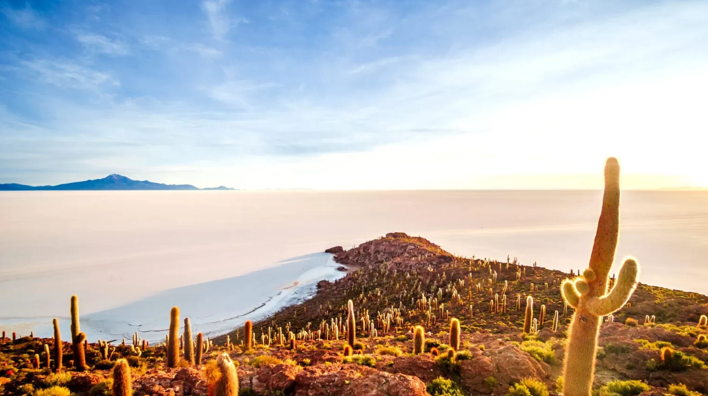

A Bolívia é um país mediterrâneo, sem acesso ao mar desde a Guerra do Pacífico (1879–1884), quando perdeu sua faixa costeira para o Chile. Mesmo assim, o território abriga paisagens de contrastes extremos: o altiplano andino a mais de 3.800 metros de altitude, os vales férteis dos Yungas e as planícies úmidas da Amazônia.

A capital constitucional é Sucre, mas a sede do governo é La Paz, a cidade mais alta do mundo a exercer funções administrativas (3.640 m). O país se divide em 9 departamentos e abriga cerca de 12 milhões de habitantes, com forte presença de povos indígenas, especialmente Quéchuas e Aimarás.